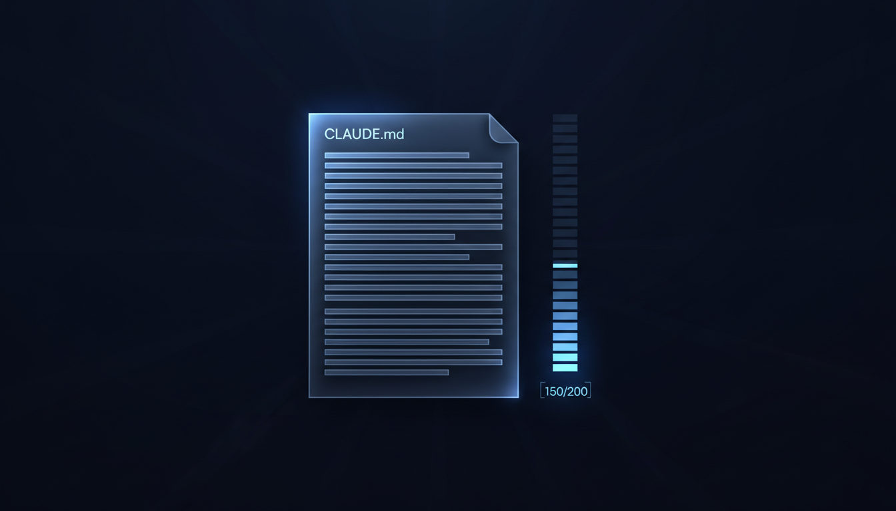
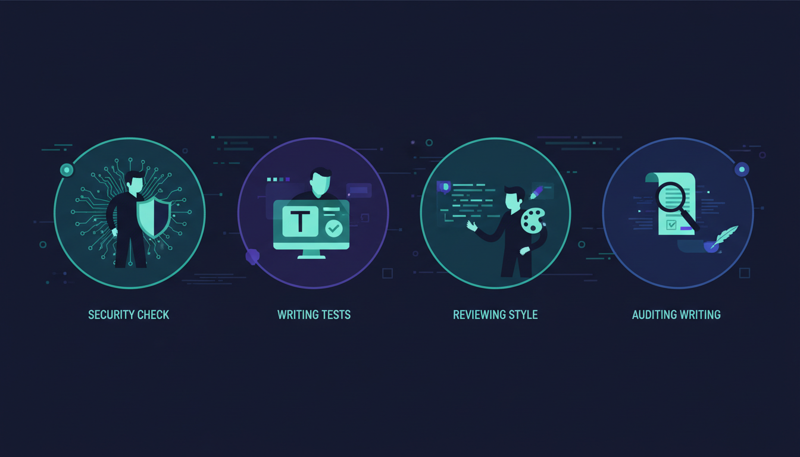

Inspirado em: "Becoming a top 1% Claude Code user" de allglenn (Towards AI, abril/2026). Este post não traduz nem resume o original — converso com ele, adiciono o que ele não cobriu, e mostro o que aprendi aplicando essas ideias na prática até virar um kit open-source de 41 skills.
TL;DR: A diferença entre quem está no top 1% do Claude Code e quem está usando como um Stack Overflow turbinado não é prompting melhor. É mentalidade de infraestrutura aplicada a uma ferramenta de IA. Este post mostra os 6 padrões que separam os dois grupos — e prova com números medidos: pass rate de 92.6% num bench público de 53 cenários, +1.84 de delta médio de qualidade, 98% de redução de tokens em loops autônomos.
O problema que ninguém quer admitir
Você abre o terminal. Digita claude. Descreve uma feature. O Claude escreve uns arquivos. Você revisa, empurra um ou outro ajuste, e dá ship. Sente que produziu. Conta isso no daily.
Mas o que está acontecendo de verdade é: você está usando o Claude Code como um Stack Overflow mais rápido. Continua sendo você quem segura todos os fios, gerencia toda mudança de contexto, baby-sitta cada decisão. A ferramenta é impressionante. Seu workflow com ela, não.
O artigo do allglenn no Towards AI abre exatamente nesse ponto, e ele tem razão. Mas o problema não é só de awareness. É de onde botar o esforço.
O top 1% não é melhor em prompting. Ele construiu sistema:
CLAUDE.mdque carrega contexto perfeito toda sessão- Hooks que aplicam quality gates sem perguntar
- Subagents rodando em paralelo, cada um atacando uma parte
- MCP servers dando ao Claude acesso real ao banco, GitHub, ferramentas internas
Eu segui esse caminho durante meses. Fiz cada um desses passos. E aí descobri uma coisa que o artigo do allglenn deixa de fora: existe um próximo nível depois de ter o sistema montado. É quando você para de só usar o sistema e começa a medir se ele realmente funciona.
Os 6 padrões que importam (e o que falta dizer sobre cada um)

1. CLAUDE.md: orçamento de instruções, não dump de docs
O allglenn cita um número que dói: CLAUDE.md tem orçamento de ~150–200 instruções. O system prompt já come 50. Cada linha que você adiciona sem o Claude precisar dilui as que importam.
O teste que ele propõe é cirúrgico:
"Antes de commitar qualquer linha, pergunte: o Claude erraria no meu codebase sem isso? Se a resposta for não, apague a linha."
Funciona. Mas tem 2 coisas que ele não explora:
Hierarquia de arquivos. O Claude Code carrega CLAUDE.md em cascata. Subdiretórios têm seus próprios CLAUDE.md carregados sob demanda:
~/.claude/CLAUDE.md ← global
./CLAUDE.md ← raiz do repo (commit)
./CLAUDE.local.md ← override pessoal (gitignore)
./src/api/CLAUDE.md ← carregado quando trabalhar em api/
./src/db/CLAUDE.md ← carregado quando trabalhar em db/Isso multiplica o budget. Em vez de empilhar tudo na raiz, você fragmenta por área. O Claude carrega só o que importa pro arquivo que está editando.
Geração automática de CLAUDE.md específico. Existe uma skill no Dev Team Kit (skill 28) que faz auditoria do repo e gera um CLAUDE.md já adaptado ao stack real (sem inventar). É a forma de não cair na armadilha "escrevi CLAUDE.md genérico que não bate com nada".
2. Hooks: a infra invisível que separa amador de pro
Aqui o artigo do allglenn é bom mas conservador. Ele mostra 3 hooks (PostToolUse pra lint, PreToolUse pra bloquear comandos perigosos, Stop pra session summary). Funciona. Mas o ecossistema de hooks vai muito além.
12 eventos de lifecycle que o Claude Code expõe:
UserPromptSubmit— antes do prompt sairPreToolUse/PostToolUse— antes/depois de qualquer toolSessionStart/Stop— abertura e fechamentoSubagentStop— quando subagent termina (pra encadear pipelines)- ...e mais 6
Onde isso fica interessante é quando você combina hooks pra compensar fraquezas conhecidas do modelo. Exemplos reais que rodam no kit que mantenho:
- pre-execution-gate — detecta prompt vago e pede confirmação antes de gastar tokens em algo errado
- keyword-detector — injeta automaticamente a skill certa baseado em keywords do prompt
- context-guard — alerta em 50% de uso de contexto, bloqueia em 75% com resumo inteligente
- pre-tool-enforcer — relê o arquivo antes de editar (combate context decay em conversas longas)
- intent-classifier — classifica intent do prompt (feature/bug/refactor/spike) e sugere o pipeline certo
O ponto: hooks não são só pra lint. Eles são onde você codifica julgamento que o modelo não tem.

3. Subagents: o pattern "duas Claudes" é só o começo
O artigo descreve o two-Claude review: sessão A implementa, sessão B revisa o diff cold. Concordo 100% — é uma das técnicas mais úteis e subutilizadas.
Mas existe um pattern mais poderoso que ele não toca: multi-agent paralelo em worktrees isolados.
Em vez de uma sessão de review, você dispara 4 reviewers em paralelo, cada um focado num eixo diferente:
code-reviewer— clean code, DRY, SOLIDsecurity-auditor— OWASP Top 10 + PoC obrigatório pra criticalstest-engineer— coverage + edge cases não cobertosanti-ai-writing— varre os 29 padrões de "prosa de IA" em docs/PRDs/comentários
Cada um roda em isolation: worktree (git worktree separado, sem contaminação cross-agent). Volta um relatório estruturado. Você sintetiza.
Por que isso importa: contexto fresco por dimensão. O reviewer de segurança não vê o blob de discussão sobre performance, então não relativiza um finding crítico só porque "tem trade-off". Cada agente está laser-focado.
Na implementação do kit, isso virou um program YAML executável de 5 fases — não precisa lembrar o setup toda vez.
4. MCP: o princípio do least-privilege é não-negociável
Aqui o allglenn acerta o ponto crítico: read-only por padrão. Você configura dois servidores: um read-only pra exploração e debugging, outro read-write atrás de permissão explícita.
O que falta no artigo é tratar MCP como superfície de ataque. Cada MCP server é código de terceiros que tem acesso aos seus dados. Recomendações práticas:
- Audit antes de instalar. O servidor é open-source? Tem revisão pública? Há quanto tempo o último commit?
- Tokens com escopo mínimo. GitHub MCP não precisa de admin scope. Postgres MCP não precisa de superuser.
- Logs estruturados de chamadas MCP. Pra você auditar depois.
- Servidor próprio em vez de público quando dados são sensíveis. Roda local, sob seu controle.
O spec do MCP é razoavelmente novo e o ecossistema está em consolidação. Não baixe servidor de qualquer um.
5. Skills vs MCP: a heurística que o artigo dá funciona até um ponto
O allglenn dá uma regra clara:
- Skill = workflow, padrão, conhecimento de domínio
- MCP = dado vivo ou ação
- Quando em dúvida, prefere skill (auditável, código aberto)
Vou um passo além: skills são código auditável; MCP é black box. Por isso o kit que mantenho tem 41 skills e MCPs são opt-in. Skill é markdown que você lê em 30 segundos. MCP é processo Node/Python rodando com permissões.
A composição que funciona: skill chama MCP quando precisa de dado vivo, mas a política do que fazer com esse dado mora na skill (auditável).
6. Os patterns avançados que ninguém ensina
O artigo lista alguns: /compact manual em 50% de contexto, /loop pra monitoramento background, model selection per task (Haiku/Sonnet/Opus), remote-control, /voice.
Vou adicionar 3 que mudaram meu workflow:
Cross-call output dedup com MinHash. Em loops autônomos, você re-roda npm test e git status dezenas de vezes. Cada vez paga o custo total do output. Com cross-call dedup (janela deslizante de 16 chamadas + Jaccard ≥0.85), runs idênticos ou ~85% similares viram um marker curto. Resultado medido: 98% de redução de tokens em second-run. Existe um benchmark público que você roda em 30s.
Loops autônomos com circuit breaker. Não basta ter /loop. Você precisa de detecção de "mesmo erro 3x" (loop infinito), stall detection (3 iterações sem git diff), token cap, e exit codes classificados pra integração com CI. Sem isso, você dorme e acorda com a fatura da Anthropic em 4 dígitos.
Eval bench público dos seus próprios agents. Esse é o nível que o artigo não toca. Cada skill que você criou: ela realmente melhora o output, ou é placebo? Rodamos um bench em 53 cenários (Pass A = modelo frio sem skill, Pass B = skill carregada, rubrica de 5 critérios × 1-5). Pass rate medido: 92.6%, delta médio de +1.84. Quando uma skill falha o bench, vira fix concreto na próxima versão — não justificamos achados.
O que separa quem só lê esse tipo de artigo de quem aplica
Vou ser direto: ler artigos como o do allglenn não muda nada. O que muda é tratar isso como engenharia de infra — sistemática, iterativa, mensurável.
O artigo dele propõe um plano de 5 dias (CLAUDE.md → hook → two-Claude review → subagent → MCP). É um bom plano. Mas a parte que ele não enfatiza é a compounding: cada setup que você faz hoje compounda em cada sessão futura.
Se você investe 30 minutos hoje configurando um hook que roda npm run lint --fix em PostToolUse, vai economizar 30 minutos por dia pelo resto do tempo que esse projeto existir. Em 6 meses, são 90 horas que não estão indo pra lint manual.
É por isso que vale a pena fazer isso antes de você precisar. O sistema só funciona se estiver pronto quando a pressão chegar.
O atalho que existe
O artigo do allglenn lista vários repos da comunidade no final: claude-code-best-practice (20k+ stars), awesome-claude-code, e outros. Vale visitar todos.
Mas existe outro caminho que eu construí pessoalmente: o Dev Team Kit, plugin Apache-2.0 que materializa todos esses padrões num único install:
- 41 skills (PO, designer, backend, frontend, QA, security, SRE, refactor, release, …) — incluindo
blog-publishereblog-screenshotque estão publicando este post agora - 15 subagents dispatcháveis em paralelo (code-reviewer, security-auditor, debugger, 4 detective subagents pra legado)
- 32 slash commands (
/spec,/plan,/build,/test,/review,/swarm,/auto, …) - 7 pipelines YAML executáveis (incl.
comprehensive-reviewcom 5 agentes paralelos,adversarial-devGAN-inspired,detective-specpra reverse-engineering de legado) - 19 hooks de lifecycle configuráveis em 4 níveis de autonomia
- Bench público de qualidade com 53 cenários, reprodutível
- Apache-2.0 + NOTICE com atribuição preservada a 17+ projetos open-source que inspiraram ele
Install:
claude plugin install https://github.com/felvieira/claude-skills-fvFunciona em Claude Code, Cursor, Windsurf, Copilot, Gemini CLI, OpenCode.
O que fica
O artigo do allglenn é o melhor playbook gratuito que vi pra quem está saindo do nível "Claude Code = Stack Overflow rápido". Recomendo ler na íntegra.
Mas se você levar uma frase desse post pra casa, que seja esta: o top 1% não é melhor em prompting. É melhor em design de sistemas. E sistemas só ficam bons quando você mede se funcionam.
Construa o CLAUDE.md (curto). Bote os hooks. Defina os subagents. Conecte os MCPs. E depois meça. Bench público, números reais, fix derivado do bench, re-bench.
O 1% não é um clube fechado. É só quem trata isso como engenharia.
Recursos pra continuar
- Artigo original: "Becoming a top 1% Claude Code user" — allglenn no Towards AI
- Docs oficiais: code.claude.com/docs
- Best practices da Anthropic: code.claude.com/docs/en/best-practices
- MCP Protocol spec: modelcontextprotocol.io
- Lista da comunidade: awesome-claude-code
- Dev Team Kit (o sistema que mantenho): github.com/felvieira/claude-skills-fv
- Bench público do kit: analyze-doc/index.pt-BR.html